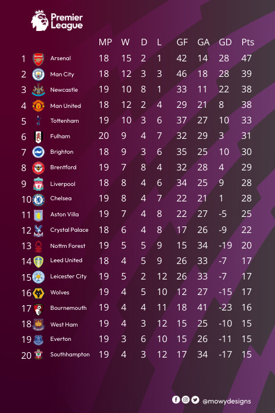

| Nr | Zawodnik | Data urodzenia |
|---|---|---|
| 1 | Alisson Becker | 1992-10-02 |
| 2 | Joe Gomez | 1997-05-23 |
| 3 | Fabinho | 1993-10-23 |
| 4 | Virgil Van Dijk | 1991-07-08 |
| 5 | Ibou Konate | 1999-05-25 |
| 6 | Thiago Alcantara | 1991-04-11 |
| 7 | James Milner | 1986-01-04 |
| 8 | Naby Keita | 1995-02-10 |
| 9 | Roberto Firmino | 1991-10-02 |
| 11 | Mo Salah | 1992-06-15 |
| 14 | Jordan Henderson | 1990-06-17 |

Liverpool FC
